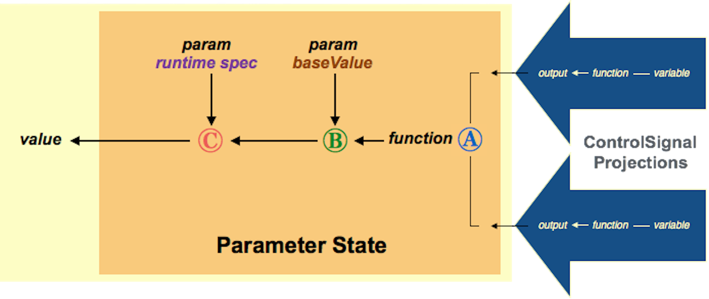

Mechanisms¶
Overview¶
Mechanisms are the core object type in PsyNeuLink. A mechanism takes an input, transforms it in some way, and provides it as an output that can be used for some purpose There are three types of mechanisms that serve different purposes:
- Processing Mechanisms aggregrate the input they receive from other mechanisms in a process or system, and/or the input to a process or system, transform it in some way, and provide the result either as input for other mechanisms and/or the output of a process or system.
- Monitoring Mechanisms monitor the output of one or more other mechanisms, receive training (target) values, and compare these to generate error signals used for learning (see Learning).
- Control Mechanisms evaluate the output of one or more other mechanisms, and use this to modify the parameters of those or other mechanisms.
A mechanism is made up of two fundamental components: the function it uses to transform its input; and the states it uses to represent its input, function parameters, and output
Creating a Mechanism¶
Mechanisms can be created in a number of ways. The simplest is to use the standard Python method of calling the
subclass for the desired type of mechanism. In addition, PsyNeuLink provides a mechanism [LINK] “factory” method
that can be used to instantiate a specified type of mechanism or a default mechanism (see [LINK]). Where other
objects required specification of a mechanism (e.g., the pathway attribute of a process), this can be done
in either of the ways just mentioned, or in any of the following ways:
name of an existing mechanism
name of a mechanism type (class)
specification dictionary – this can contain an entry specifying the type of mechanism, and/or entries specifiying the value of parameters used to instantiate it. These should take the following form:
MECHANISM_TYPE: <name of a mechanism type>if this entry is absent, a default mechanism will be created (see [LINK]: Mechanism_Base.defaultMechanism)
<name of argument>:<value>
this can contain any of the standard parameters for instantiating a mechanism (see Specifying Mechanism Parameters) or ones specific to a particular type of mechanism (see documentation for subclass). Note that parameter values in the specification dict will be used to instantiate the mechanism. These can be overridden during execution by specifying Runtime Parameters, either when calling the
executemethod for the mechanism [LINK], or where it is specified in thepathwayof a process [LINK]).
Function¶
The core of every mechanism is its function, which transforms its input and generates its output. The function is
specified by the mechanism’s function parameter. Each type of mechanism specifies one or more functions to use,
and generally these are from the Utility Functions class provided by PsyNeuLink. Functions are specified
in the same form that an object is instantiated in Python (by calling its __init__ method), and thus can be used to
specify its parameters. For example, for a Transfer mechanism, if the Logistic function is selected, then its gain
and bias parameters can also be specified as shown in the following example:
my_mechanism = Transfer(function=Logistic(gain=1.0, bias=-4))
While every mechanism type offers a standard set of functions, a custom function can also be specified. Custom functions can be any Python function, including an inline (lambda) function, so long as it generates a result with a type that is consistent with the type expected by the mechanism (see Function; also see :ref:’Mechanism_Specifying_Parameters` below).
The input to a mechanism’s function is contained in the mechanism’s variable attribute, and the result of its
function is contained in the mechanism’s value attribute.
Note
The input to a mechanism is not necessarily the same as the input to its function (i.e., its variable attribute);
the mechanism’s input is processed by its inputState(s) before being submitted to its function
(see InputStates). Similarly, the result of a mechanism’s function (i.e., its value attribute) is not
necessarily the same as the mechanism’s output; the result of the function is processed by the mechanism’s
outputstate(s) which is then assigned to the mechanism’s outputValue attribute (see OutputStates)
States¶
Every mechanism has three types of states (shown schematically in the figure below):

Schematic of a mechanism showing its three types of states (input, parameter and output).
InputStates¶
These represent the input(s) to a mechanism. A mechanism usually has only one InputState,
stored in its inputState attribute. However some mechanisms have more than one. For example, Comparator
mechanisms have one inputState for their sample and another for their target input. If a mechanism has
more than one inputState, they are stored in an OrderedDict in the mechanisms inputStates attribute; the key of
each entry is the name of the inputState and its value is the inputState itself. If a mechanism has multiple
inputStates, the first – designated its primary inputState – is also assigned to its inputState attribute.
Each inputState of a mechanism can receive one or more projections from other mechanisms,
however all must provide values that share the same format (i.e., number and type of elements).
A list of projections received by an inputState is stored in its receivesFromProjections attribute.
InputStates, like every other object type in PsyNeuLnk, have a function parameter.
An inputState’s function performs a Hadamard (i.e., elementwise) aggregation of the inputs
it receives from its projections. The default function is LinearCombination which simply sums the values
and assigns the result to the inputState’s value attribute. A custom function can be assigned to an inputState
(e.g., to perform a Hadamard product, or to handle non-numeric values in some way), so long as it generates an output
that is compatible with its inputs the value for that inputState expected by the mechanism’s function. The value
attributes for all a mechanism’s inputStates are concatenated into a 2d np.array and assigned to the mechanism’s
variable attribute, which serves as the input to the mechanism’s function.
ParameterStates¶
These represent the parameters of a mechanism’s function. PsyNeuLink assigns one parameterState for each parameter
of the function (which correspond to the arguments in the call to instantiate it; i.e., its __init__ method).
Like other states, parameterStates can receive projections. Typically these are from Control Signal projections
from a Control Mechanisms that is used to modify the function’s parameter value in response to the outcome(s)
of processing. The parameter of a function can also be modified by a specification of runtime parameters with the
mechanism. The figure below shows how these factors are combined by the parameterState to determine the parameter
of a function.
Role of ParameterStates in Controlling the Parameter Value of a Function

Component Impact on Parameter Value Brown (A) baseValue of drift rate parameter of DDM function Purple (B) runtime specification of drift rate parameter Red (C) runtime parameter influences controlSignal-modulated baseValue Green (D) combined controlSignals modulate baseValue Blue (E) parameterState function combines controlSignals
{kind=link}
OutputStates¶
These represent the output(s) of a mechanism. A mechanism can have several outputStates. Similar to inputStates,
the primary (first or only) outputState is assigned to the mechanism’s outputState attribute, while all of its
outputStates (including the primary one) are stored in an OrderedDict in its outputStates attribute; the
key for each entry is the name of an outputState, and the value is the outputState itself. Usually the function
of the primary outputState transfers the result of the mechanism’s function to the primary outputState’s value
attribute (i.e., its function is the Linear function with slope=1 and intercept=0). Other outputStates may use
other functions to transform the result of the mechanism’s function in various ways (e.g., generate its mean,
variance, etc.), the results of which are stored in each outputState’s value attribute. OutputStates may also
be used for other purposes. For example, ControlMechanisms can have multiple outputStates, one for each parameter
controlled. The value of each outputState can serve as a sender for projections, to transmit its value to other
mechahnisms and/or the ouput of a process or system. The value attributes of all of a mechanism’s outputStates
are concatenated into a 2d np.array and assigned to the mechanism’s outputValue attribute.
Specifying Mechanism Parameters¶
When a mechanism is created, its parameters can be specified either as arguments (where supported) or as entries in a specification dictionary. The entries can contain any of the following, where appropriate to a given mechanism subclass, as well as those specific to a particular subclass (documented in each subclass):
INPUT_STATES: Dict[str, InputState] - used to specify specialized inputStates required by a mechanism subclass (see Creating an InputState for details of specification).
FUNCTION: function or method : default method implemented by subclass - specifies the function for the mechanism; can be one implemented by the subclass or a custom function.
FUNCTION_PARAMS: Dict[str, value] - dictionary of parameters for the mechanism’s function. The key of each entry must be the name of the parameter. The value of each entry can be one of the following:
- simply the value of the parameter itself;
- a parameter state the value of which specifies the parameter’s value (see Creating a ParameterState).
- a tuple with exactly two items: the parameter value and a projection type specifying either a Control Signal or a LearningSignal (a
ParamValueProjectionnamedtuple can be used for clarity).Note
Many subclasses include the function parameters as arguments in the call to the mechanism subclass, (i.e., used to create the mechanism); any values specified in the
FUNCTION__PARAMSentry of the mechanism’s params dict take precedence over values specified in such arguments.
OUTPUT_STATES: Dict[str, OutputState] - used to specify specialized outputStates required by a mechanism subclass (see Creating an OutputState for details of specification).
MONITORED_OUTPUT_STATES: List[OutputState] - used to specify outputStates to be monitored by a ControlMechanism (see Monitored OutputStates for details of specification).
Execution¶
A mechanism can be executed using its execute or run methods. This can be useful in testing a mechanism
and/or debugging. However, more typically, mechanisms are executed as part of a process or system (see Process
Execution and System Execution for more details). For either of these, the mechanism must
be included in the pathway of a process. There, it can be specified on its own, or as the first item of a tuple
that also has an optional set of runtime parameters (see below), and/or a phase specification for use when executed
in a system (see System Phase for an explanation of phases; and see Process Mechanisms
for additional details about specifying a mechanism in a process pathway).
Note
Mechanisms cannot be specified directly in a system. They must be specified in the pathway of a process,
and then that process must be included in the processes of a system.
Runtime Parameters¶
The parameters of a mechanism are usually specified when the mechanism is created. However, these can be overridden
when it executed. This can be done by using the runtime_param argument of its execute method, or by specifying
the runtime parameters in a tuple with the mechanism in the pathway of a process
(see Process Mechanisms). In either case, runtime parameters are specified using a dictionary that
contains one or more entries, each of which contains a sub-dictionary corresponding to the mechanism’s states
(inputStates, parameterStates and/or outputStates); those dictoinaries, in turn, contain entries for the values of
the runtime parameters of the state, its function, or projections (see the runtime_params argument of the
execute method below for more details).
Role in Processes and Systems¶
Mechanisms that are part of a process and/or system are assigned designations that indicate the role they play. These
are stored in the mechanism’s processes and systems attributes, respectively (see Process
Mechanisms and System Mechanisms for designation labels and their meanings).
Any mechanism designated as ORIGIN receives a projection to its primary inputState from the process(es)
to which it belongs. Accordingly, when the process (or system of which the process is a part) is executed, those
mechainsms receive the input provided to the process (or system). Note that a mechanism can be the ORIGIN
of a process but not of a system to which that process belongs (see the note under System Mechanisms for
further explanation). The output value of any mechanism designated as TERMINAL is assigned to the output
of any process or system to which it belongs.
-
class
Mechanism.MechanismList(owner, tuples_list: list)¶ Provides access to items and their attributes in a list of
MechanismTuplesfor an owner.MechanismTuplesare of the form: (mechanism object, runtime_params dict, phaseSpec int).-
mechanisms¶ list of Mechanism objects
-
names¶ list of strings – each item is a mechanism.name
-
values¶ list of values – each item is a mechanism.value
-
outputStateNames¶ list of strings – each item is an outputState.name
-
outputStateValues¶ list of values – each item is an outputState.value
-
get_tuple_for_mech(mech)¶ Return first mechanism tuple containing specified mechanism from the list of mech_tuples
-
mechanisms Return list of all mechanisms in MechanismList
-
names Return names of all mechanisms in MechanismList
-
outputStateNames Return names of all outputStates for all mechanisms in MechanismList
-
outputStateValues Return values of outputStates for all mechanisms in MechanismList
-
values Return values of all mechanisms in MechanismList
-
-
class
Mechanism.MechanismTuple(mechanism, params, phase)¶ -
mechanism¶ Alias for field number 0
-
params¶ Alias for field number 1
-
phase¶ Alias for field number 2
-
-
class
Mechanism.Mechanism_Base(variable=NotImplemented, params=NotImplemented, name=None, prefs=None, context=None)¶ Abstract class for Mechanism
Note
Mechanisms should NEVER be instantiated by a direct call to the base class. They should be instantiated using the
mechanismfactory method (see it for description of parameters), or by calling the desired subclass.-
variable¶ value, List[value] or ndarray : default
variableInstanceDefault– value used as input to the mechanism’sfunction. When specified in the call to create an instance (i.e., the mechanism’s __init__ method), it is used as a template to define the format of the function’s input (length and type of elements), and the default value for the instance. Converted internally to a 2d np.array.
-
inputValue¶ 2d np.array : default
variableInstanceDefault– synonym forvariable; contains one value for the variable of each inputState of the mechanism.
-
function_params¶ Dict[str, value] – contains one entry for each parameter of the mechanism’s function. The key of each entry is the name of a function parameter, and the value its value.
-
inputState¶ InputState : default default InputState – primary inputState for the mechanism; same as first entry in
inputStatesattribute.
-
inputStates¶ OrderedDict[str, InputState] – contains a dictionary of the mechanism’s inputStates. The key of each entry is the name of the inputState, and its value is the inputState. There is always at least one entry, which contains the primary inputState (i.e., the one in the
inputStateattribute).
-
parameterStates¶ OrderedDict[str, ParameterState] – contains a dictionary of parameterStates, one for each parameater of the mechanism’s function. The key of each entry is the name of the parameterState, and its value is the parameterState. Note: mechanism’s function parameters are listed in the the
function_paramsattribute).
-
outputState¶ OutputState : default default OutputState – primary outputState for the mechanism; same as first entry in
outputStatesattribute.
-
outputStates¶ OrderedDict[str, InputState] – contains a dictionary of the mechanism’s outputStates. the key of each entry is the name of an outputState, and its value is the outputState. There is always at least one entry, which contains the primary outputState (i.e., the one in the
outputStateattribute).
-
value¶ 2d np.array : default None – output of the mechanism’s function; Note: this is not necessarily equal to the
outputValueattribute; it isNoneuntil the mechanism has been executed at least once.
-
outputValue¶ List[value] : default mechanism.function(variableInstanceDefault) – list of values of the mechanism’s outputStates. Note: this is not necessarily equal to the
valueattribute.
-
phaseSpec¶ int or float : default 0 – specifies the time_step(s) on which the mechanism is executed as part of a system (see Process for specification [LINK], and System for how phases are used. [LINK])
-
processes¶ Dict[Process, str]: – contains a dictionary of the processes to which the mechanism belongs, and its designation in each. The key of each entry is a process to which the mechanism belongs, and its value the mechanism’s designation in that process (see Process Mechanisms for designations and their meanings).
-
systems¶ Dict[System, str]: – contains a dictionary of the systems to which the mechanism belongs, and its designation in each. The key of each entry is a system to which the mechanism belongs, and its value the mechanism’s designation in that system (see System Mechanisms for designations and their meanings).
-
timeScale¶ TimeScale : default TimeScale.TRIAL – determines the default TimeScale value used by the mechanism when executed.
-
name¶ str : default Process-[index] – name of the mechanism. Specified in the name argument of the call to create the mechanism; if not is specified, a default is assigned by MechanismRegistry based on the mechanism’s subclass (see Registry for conventions used in naming, including for default and duplicate names).
-
prefs¶ PreferenceSet or specification dict : Mechanism.classPreferences – preference set for the mechanism. specified in the prefs argument of the call to create the mechanism; if it is not specified, a default is assigned using
classPreferencesdefined in __init__.py (see Description under PreferenceSet for details) [LINK].
-
execute(input=None, runtime_params=None, time_scale=<TimeScale.TRIAL: 1>, context=None)¶ Carry out a single execution of the mechanism.
Update inputState(s) and param(s), call subclass __execute__, update outputState(s), and assign self.value
Parameters: - input (List[value] or ndarray : default variableInstanceDefault) – input to use for execution of the mechanism. This must be consistent with the format mechanism’s inputState(s): the number of items in the outermost level of list, or axis 0 of ndarray, must equal the number of inputStates (if there is more than one), and each item must be compatible with the format (number and type of elements) of each inputState’s variable (see Inputs for details of input specification formats).
- runtime_params (Optional[Dict[str, Dict[str, Dict[str, value]]]]:) – dictionary that can include any of the parameters used as arguments to instantiate the object,
and the function of or projection(s) to any of its states. Any value assigned to a parameter
will override the current value of that parameter for this – but only this execution of the mechanism;
it will return to its previous value following execution.
Each entry is either the specification for one of the mechanism’s params (in which case the key
is the name of the param, and its value the value to be assigned to that param), or a dictionary
for a specified type of state (in which case, the key is the name of a specific state or a keyword
indicating the type of state (
INPUT_STATE_PARAMS,OUTPUT_STATE_PARAMSorPARAMETER_STATE_PARAMS), and the value is a dictionary containing parameter dictionaries for that state or all states of the specified type). The latter (state dictionaries) contain entries that are themselves dictionaries containing parameters for the state’s function or its projections. The key for each entry is a keyword indicating whether it is for the state’s function (FUNCTON_PARAMS), all of its projections (PROJECTION_PARAMS), a particular type of projection (MAPPING_PARAMS or :keyword:`CONTROL_SIGNAL_PARAMS), or to a specific projection (using its name), and the value of each entry is a dictionary containing the parameters for the function, projection, or set of projections (keys of which are parameter names, and values the values to be assigned). - time_scale (TimeScale : default TimeScale.TRIAL) – determines whether mechanisms are executed for a single time step or a trial
Returns: output of mechanism – outputState.value containing the output of each of the mechanism’s outputStates[] after either one time_step or the full trial
Return type: ndarray
-
initialize(value)¶ Assign initial value to mechanism.value and update outputStates
Takes a number or 1d array and assigns it to the first item of the mechanism’s
valueattributeParameters: value (List[value] or 1d ndarray) –
-
run(inputs, num_executions=None, call_before_execution=None, call_after_execution=None, time_scale=None)¶ Run a sequence of executions
Call execute method for each in a sequence of executions specified by the
inputsargument (see Inputs in Run for additional details of formatting input specifications)Parameters: - inputs (List[input] or ndarray(input) : default default_input_value) – input for each execution of mechanism (see Inputs in Run for detailed description of formatting requirements and options).
- call_before_execution (Function : default=
None) – called before each execution of the mechanism. - call_after_execution (Function : default=
None) – called after each execution of the mechanism. - time_scale (TimeScale : default TimeScale.TRIAL) – determines whether mechanisms are executed for a single time step or a trial
Returns: <mechanism>.results – list of the values of the outputStates for each execution of the mechanism
Return type: List[outputState.value]
-
-
Mechanism.mechanism(mech_spec=None, params=None, context=None)¶ Factory method for Mechanism; returns the type of mechanism specified or a default mechanism.
If called with no arguments, returns the default mechanism ([LINK for default]).
Parameters: - mech_spec (Optional[Mechanism subclass, str, or dict]) – if it is
None, returns the default mechanism ([LINK for default]); if it is the name of a Mechanism subclass, a default instance of that subclass is returned; if it is the name of a Mechanism subclass registered in theMechanismRegistryan instance of a default mechanism for that class is returned, otherwise the string is used to name an instance of the default mechanism; if it is a dict, it must be a mechanism specification dict (see Creating a Mechanism). Note: if a name is not specified, the nth instance created will be named by using the mechanism’sfunctionTypeattribute as the base and adding an indexed suffix: functionType-n. - params (Optional[Dict[param keyword, param value]]) – passed to the relevant subclass to instantiate the mechanism. Entries can be any parameters described in Specifying Mechanism Parameters that are relevant to the mechanism’s subclass, and/or any defined by a Mechanisms subclass itself.
- context (str) – if it is the keyword
VALIDATE, returnsTrueif specification would return a valid subclass object; otherwise returnsFalse.
Returns: Instance of specified Mechanism subclass or None
Return type: - mech_spec (Optional[Mechanism subclass, str, or dict]) – if it is
-
Mechanism.random() → x in the interval [0, 1).¶